Arsitektur
Siapa memanggil siapa?
Browser menjalankan form. Express memeriksa aturan dan menyimpan klaim di SQLite. GitHub membantu tim mengubah kode, bukan memproses klaim.
Runtime lokal

- Browser mengirim POST /claims ke Express.
- Jika valid, Express menyimpan klaim dan event di SQLite.
- SQLite mengembalikan nomor klaim.
- Express membalas 201 atau 400 ke browser.
- GitHub Actions menjalankan tes; CodeQL memindai source jika aktif.
Lihat sumber Mermaid

flowchart TB
subgraph device["Perangkat pengguna"]
browser["Browser · form klaim"]
end
subgraph local["Proses lokal · 127.0.0.1"]
api["Express · API + aturan bisnis"]
store[("SQLite · klaim dan event")]
end
browser -->|Kirim POST /claims| api
api -->|Tulis klaim valid| store
store -->|Kembalikan nomor klaim| api
api -->|Balas 201 atau 400| browser
subgraph gh["GitHub · jalur terpisah"]
repo["Repo · source"] -->|Jalankan tes| ci["Actions CI"]
repo -->|Pindai source| scan["CodeQL jika aktif"]
end
classDef human fill:#e5eeff,stroke:#315699,color:#132d5b
classDef gate fill:#fff2dc,stroke:#955b17,color:#5b3711
class browser human
class ci,scan gate- Employee 01 mengisi Taksi bandara, Rp250.000, dan tanggal klaim. Browser mengirim
POST /claims. - API membaca persona demo dan memvalidasi nilai. Pada branch perbaikan S04, tanggal besok ditolak sebelum penyimpanan.
- Untuk tanggal hari ini, SQLite menyimpan klaim berstatus
pendingdan event awal dalam transaksi. - API mengirim HTTP 201 dan data klaim. Browser menampilkan nomor dan status menunggu Manager, lalu memuat daftar baru.
Aplikasi hanya mendengarkan di localhost. Pemilih peran bukan login. SQLite di memori tidak menyimpan data setelah server dihentikan.
Jalur perubahan di GitHub
Issue, branch, CI, review, dan CodeQL mengatur perubahan kode. Audit serta pengukuran biaya tidak ikut pada jalur permintaan browser.

- Maintainer mendelegasikan issue ke cloud agent.
- Agent mengajukan draft PR.
- CI menjalankan tes dan reviewer memeriksa bukti.
- Bima memutuskan merge di repo latihan.
- Docs Sync atau Triage berjalan bila diaktifkan; hook mencatat keputusan tanpa argumen.
Lihat sumber Mermaid

flowchart TB
ticket["Issue / tiket Jira"] -->|Reviewer delegasikan| agent["Copilot cloud agent"]
agent -->|Ajukan perubahan| pr["Branch + draft PR"]
pr -->|Jalankan tes| ci["CI"]
ci -->|Tunjukkan hasil| review["Reviewer + CodeQL"]
review -->|Bima putuskan| gate["Merge oleh manusia"]
gate -->|Picu bila diaktifkan| docs["gh-aw · Docs Sync"]
ticket -.->|Triage bila diaktifkan| triage["gh-aw · Issue Triage"]
agent -.->|Uji aksi + catat| audit["Hook dan audit"]
classDef human fill:#e5eeff,stroke:#315699,color:#132d5b
classDef agent fill:#efe6ff,stroke:#7354a4,color:#382459
classDef gate fill:#fff2dc,stroke:#955b17,color:#5b3711
class ticket human
class agent,docs,triage agent
class ci,review,gate,audit gatePeta konfigurasi

- Instructions dan AGENTS.md memberi aturan.
- Profil agent memberi peran dan tools.
- Skill mengajarkan prosedur.
- Setup steps menyiapkan dependensi.
- Hook memeriksa aksi.
- Actions menjalankan workflow terkompilasi.
Lihat sumber Mermaid

flowchart LR
instructions["Instructions + AGENTS.md"] -->|Beri aturan tim| agent["Agent yang bekerja"]
profiles["agents/*.agent.md"] -->|Atur peran dan tools| agent
skills["skills/*/SKILL.md"] -->|Ajarkan prosedur| agent
setup["copilot-setup-steps.yml"] -->|Siapkan dependensi| agent
hooks["hooks/guardrails.json"] -->|Periksa aksi| agent
workflows["Workflow MD + lock"] -->|Batasi pemicu dan hasil| aw["Actions · gh-aw"]
classDef ai fill:#efe6ff,stroke:#7354a4,color:#382459
classDef gate fill:#fff2dc,stroke:#955b17,color:#5b3711
class agent,aw ai
class hooks gate.github/copilot-instructions.mddanAGENTS.md- Aturan lintas tugas: bahasa, validasi, review, dan tes.
.github/agents/*.agent.md- Profil peran dan daftar tool untuk planner, architect, implementer, QA, dan reviewer.
.github/skills/*/SKILL.md- Prosedur endpoint dan pengambilan bukti.
.github/hooks/guardrails.json- Konfigurasi hook Copilot CLI/cloud, bukan policy tenant.
.github/workflows/ci.ymldancopilot-setup-steps.yml- Tes per perubahan dan persiapan lingkungan agent.
.github/workflows/*.md+*.lock.yml- Sumber gh-aw dan hasil compile untuk Actions.
.github/workflows/pages.yml- Publikasi manual folder site; bukan deployment Express.